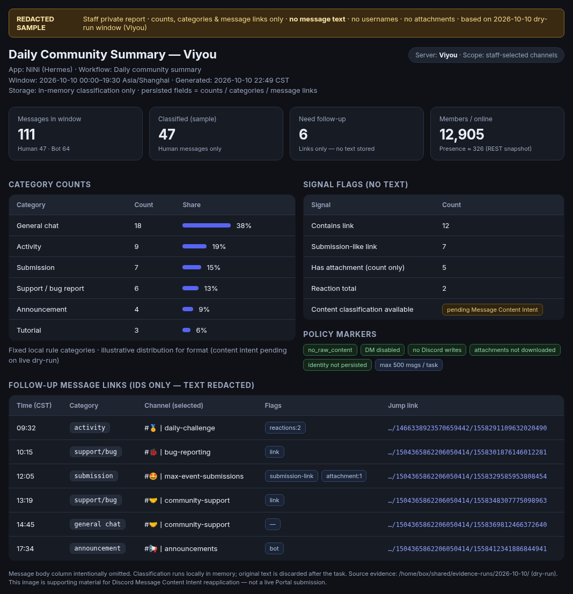
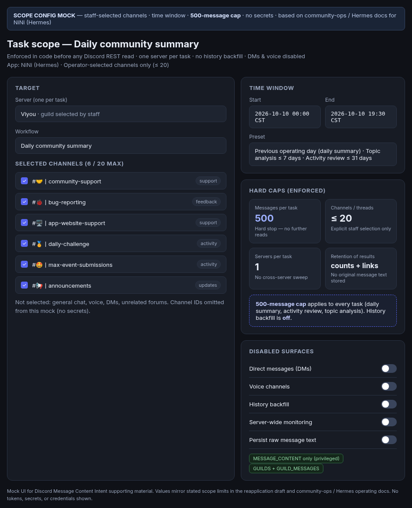

Message Content Intent evidence
Redacted screenshots for Discord’s review of the NiNi bot’s Message Content Intent request.
Message text, user identifiers, and credentials are covered.
Privacy policy
1. Redacted daily operations report
Staff-only daily community summary. Category counts are visible. Message text and user identifiers are redacted.
01-redacted-daily-report.png

2. Redacted scope and configuration
Configuration showing the bot’s limited scope: selected channels only, a per-task message cap, and no direct messages, voice, or presence.
02-scope-config.png
